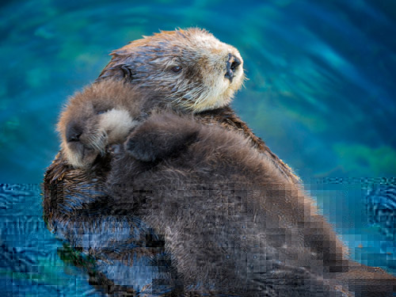
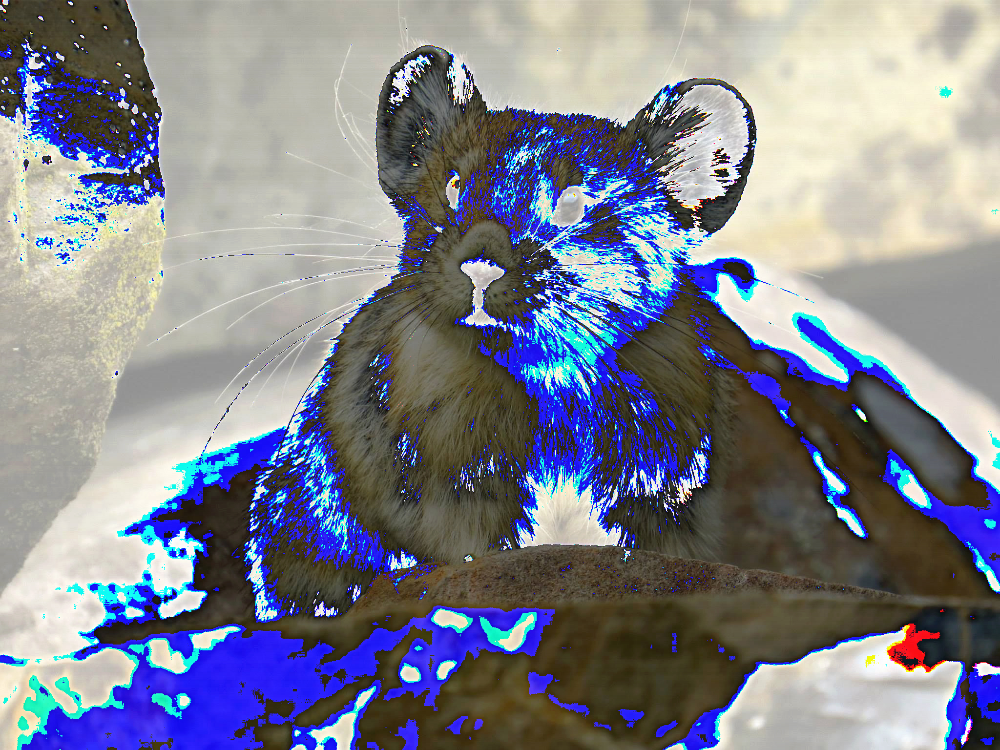
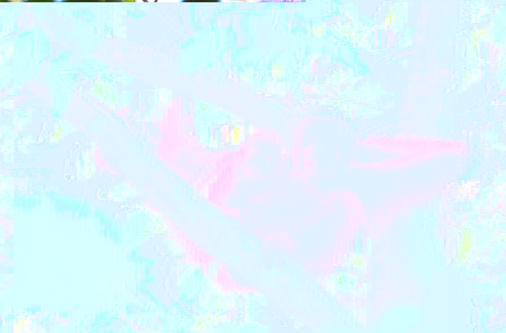
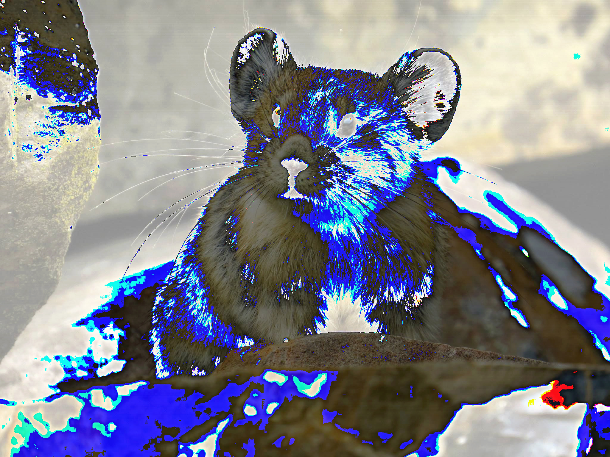
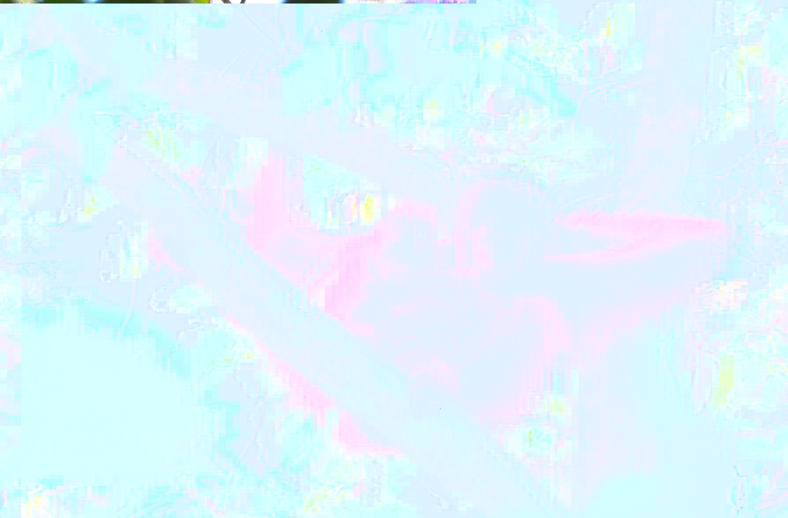

Glitch Art
by Sosofarsosofie
"Endangered" is a photo series I made using datamoshing techniques I learned in class.
All of these animals you see before you are either endangered or on the brink of extinction. Sea otter populations are decreasing due to diseases and dwindling food resources. The pixelation on the mother otter and its child represents how they are disappearing from our coasts. The Blue Macaw can no longer be found in the wild since this week. The wave image the glitch creates, I believe shows how much backlash this event has caused. The American Pika are endangered due to human climate change. The electric blue on the Pika shows its need for cooler weather. The last male white rhino died earlier this year. The glitched image of the Rhino emphasizes its horn, which is why they were hunted down to extinction in the first place. The Bornean Orangutan is barely visible in my last image. This is to represent their disappearance from the world. Unfortunately, this is a very possible future for all of these animals.
All of these animals are on different sides of the world and yet they are slowly dwindling in numbers. Scientists are scrambling to find a solution to save these animals. The that question remains is if they will find a solution in time. If not, one day this will be the only way to see these animals: on screen. And even then, those images can become corrupted as I demonstrate here in this series. I made this series as a way to reflect on how humans have impacted all living things and what we could possibly do to fix it.
 


